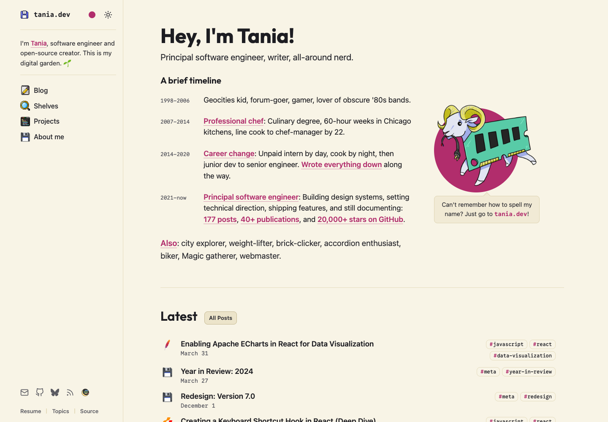

V1 · 2026 年 10 月 19 日 · AI 辅助：Codex
文档式布局、复古图标与可选择的主题。
Tania 的网站将个人经历、技术文章与开源项目放在同一套阅读界面中。它的趣味来自像素图标、插画和主题选择；文章仍以连续文字为主，装饰集中在导航与内容入口。¹

官网首页截图，2026 年 10 月 19 日。页面与图像内容归原作者。
视觉语言
- 整体风格：偏文档界面与个人数字花园。侧栏、年份、标签和连续列表形成内容库的秩序，复古图形保留个人兴趣。
- 作者说明：2024 年的 V7 改版文章提到受到 Docusaurus 启发，并希望通过侧栏帮助读者探索内容。本次观察的首页已出现主题书架等后续调整，不将旧版说明当作当前页面的完整定义。³
- 表达方式（设计分析）：字体与排版承担主要信息，插画和图标承担趣味。两者分工，使专业内容与个人表达能够共存，页面不必处处采用装饰性处理。
字体与层级
- 标题：Outfit。较圆的轮廓配合粗字重，使问候与章节标题显得鲜明、亲近；正文保持较轻的视觉分量，避免整页同样醒目。
- 正文：系统无衬线。以常规字重承接连续阅读，与较醒目的标题形成分工；本次 macOS 浏览器实际使用系统字体。
- 短信息：Google Sans Code。日期与年份采用等宽字形，形成可对照的时间线索，并与文章标题区分。
- 字号关系：首页问候明显大于经历与条目，文章页以标题、章节、正文递减。手机收小标题，保留正文阅读尺度，不将所有文字同步缩小。
版式与节奏
- 桌面：左侧导航持续可见，右侧展开内容。阅读时仍能辨认主要入口；代价是导航长期占据部分屏宽。
- 首页：经历按时间排列，最新文章较紧凑，主题书架使用卡片，系列与项目再回到行式排列。不同内容采用不同密度，形成浏览节奏。
- 文章页：正文区域比首页更窄，章节间距明显，代码单独成块。首页用于浏览材料，文章页转向连续阅读。
- 手机：侧栏收为顶部菜单，内容转为单列，首页插画移到介绍下方。菜单展开后占据大部分屏幕，导航清楚，但会暂时中断正文浏览。
色彩
- 明暗基底：浅色为略偏黄的米白，深色为炭灰。低饱和背景承载大面积文字，插画保留原有颜色。
- 局部强调：提供多种强调色，色点、插画的圆形底与部分标签随选择变化；不把整片正文背景染成主题色。
- 角色区分：标题、正文、日期与边框分别承担强弱层级；色彩作为辅助，文字的字号、字重与排列顺序仍提供稳定的阅读线索。
图像与形状
- 像素图标：软盘、记事本等图形用于站点标识与栏目入口。它们把计算机文化带入日常导航，也为相似的文字条目提供局部识别线索。
- RAM 插画（设计分析）：公羊与内存条组合，以略显夸张的形象呼应技术内容。它成为介绍区的视觉停顿，又没有扩展为每篇文章的装饰背景。
- 容器分工：普通文章使用平面列表，主题书架以浅底、细边框、小圆角和轻阴影聚合内容。卡片用于呈现一组主题，避免每条材料都获得同等包裹。
动效与反馈
- 轻量反馈：卡片边框随悬浮变化，链接与键盘焦点提供位置提示；整体表现以短暂反馈为主。
- 可选择的外观：明暗与配色入口常驻导航，修改局部外观时，页面的内容顺序和主要布局保持稳定。
- 搜索反馈：博客搜索在当前列表中缩小结果，并突出匹配文字。输入、结果与命中位置同时可见，读者能对照搜索词判断相关性。²
- 操作取舍：主题、配色与菜单使用图标节省空间，但也增加了辨认要求；手机菜单需要展开，常驻侧栏中的入口不再同时可见。
资料与观察范围
- Tania Rascia 首页。
- 博客列表。
- 作者改版说明：Redesign — Version 7.0，2024 年 12 月 1 日。文中介绍当时的改版目标，不将旧版栏目安排视为当前结构。
- 官网公开源码。字体、颜色与状态以本次页面实际渲染及公开样式为观察依据。
观察时间：2026 年 10 月 19 日。范围为首页、博客列表和上述改版文章的桌面与 390px 手机宽度，以及明暗、配色、悬浮、键盘焦点、手机菜单和搜索的局部检查。未做手机真机、完整无障碍或用户效果研究。视觉作用为本文分析，作者自述单独注明。


留言
由 Disqus 提供。